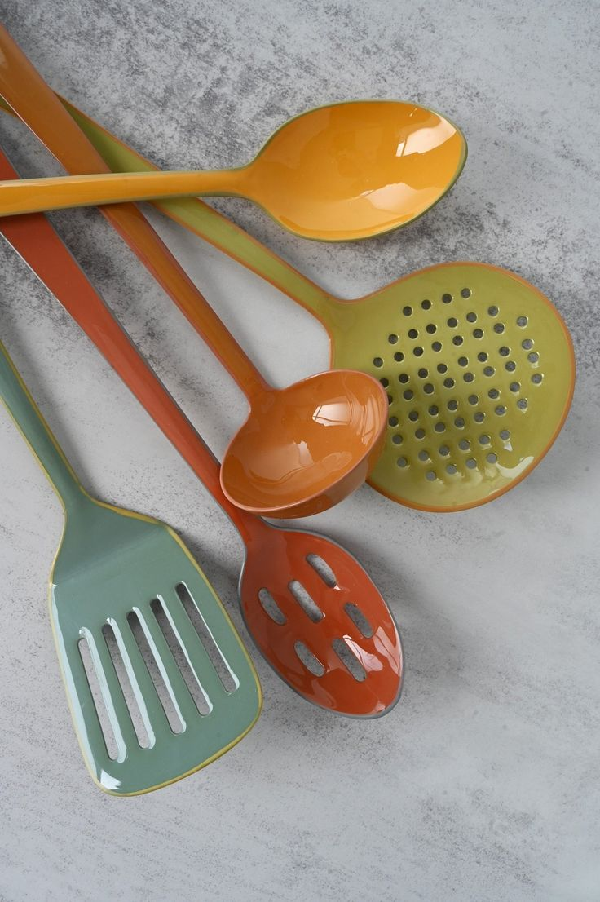
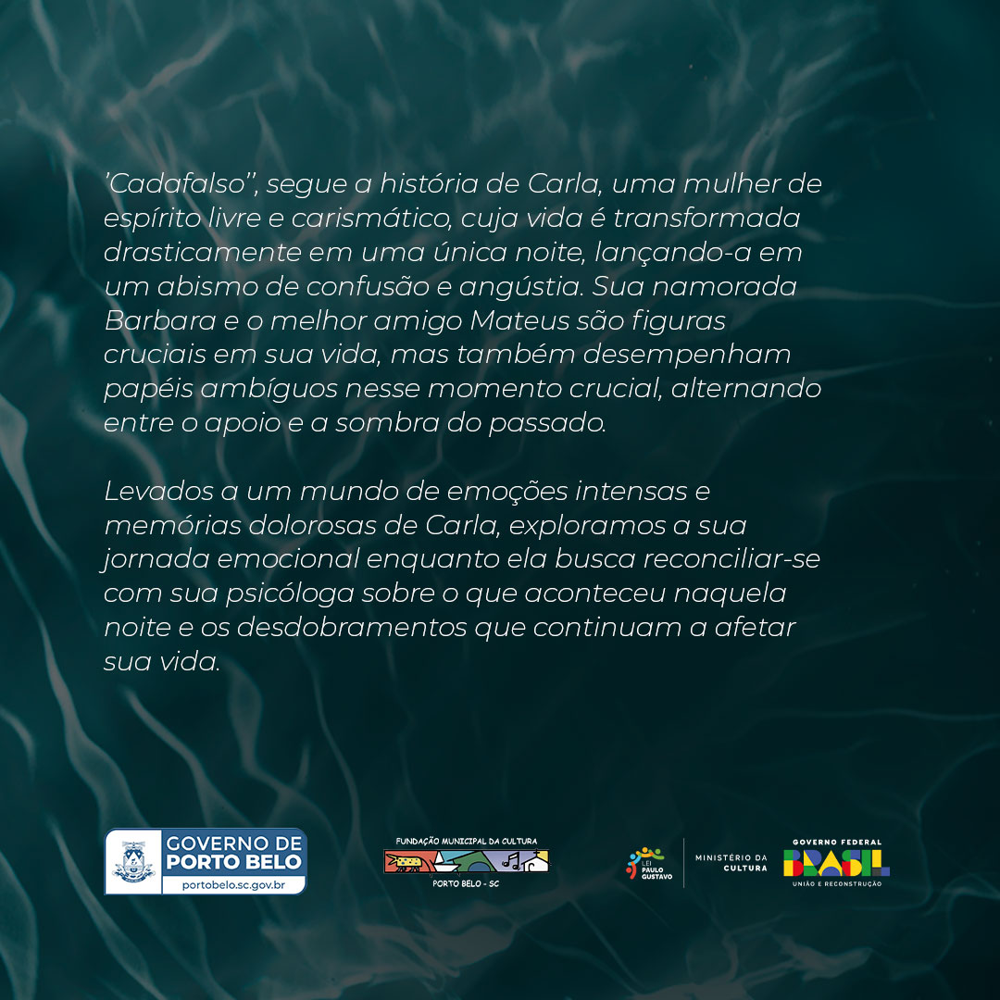
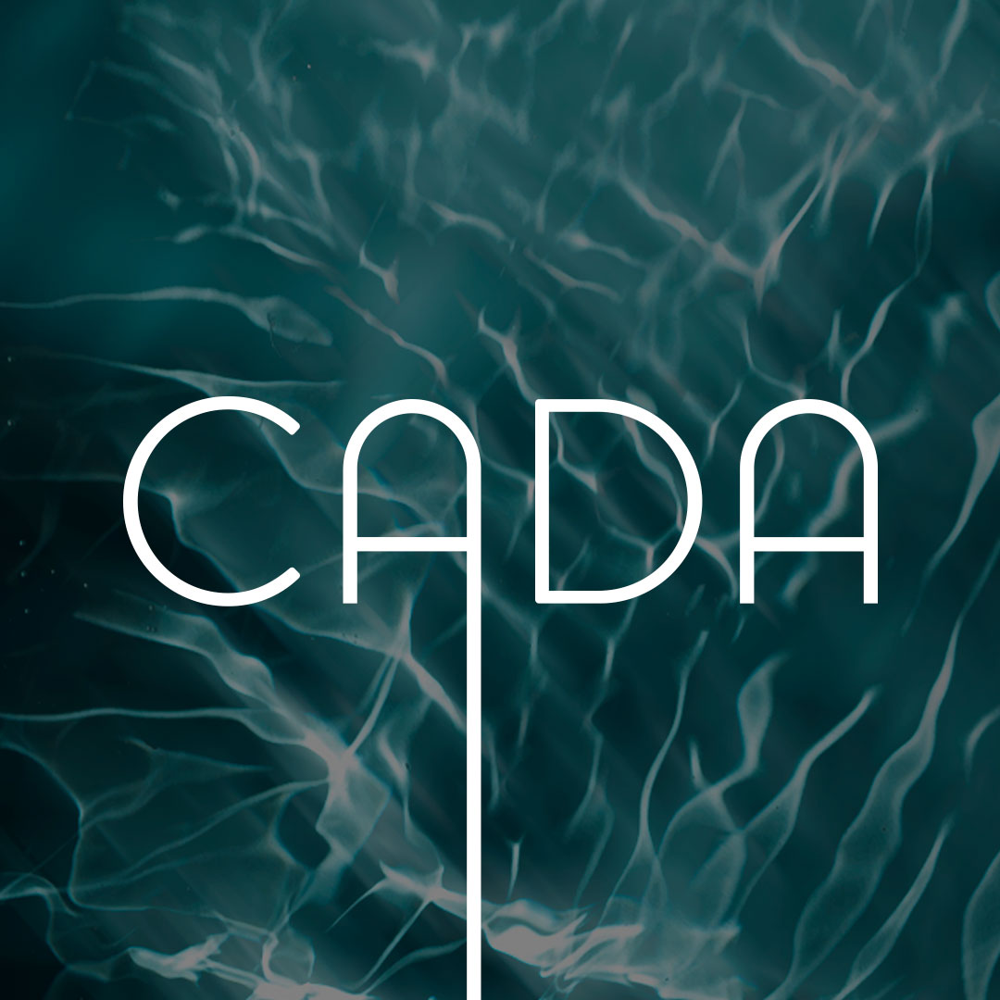
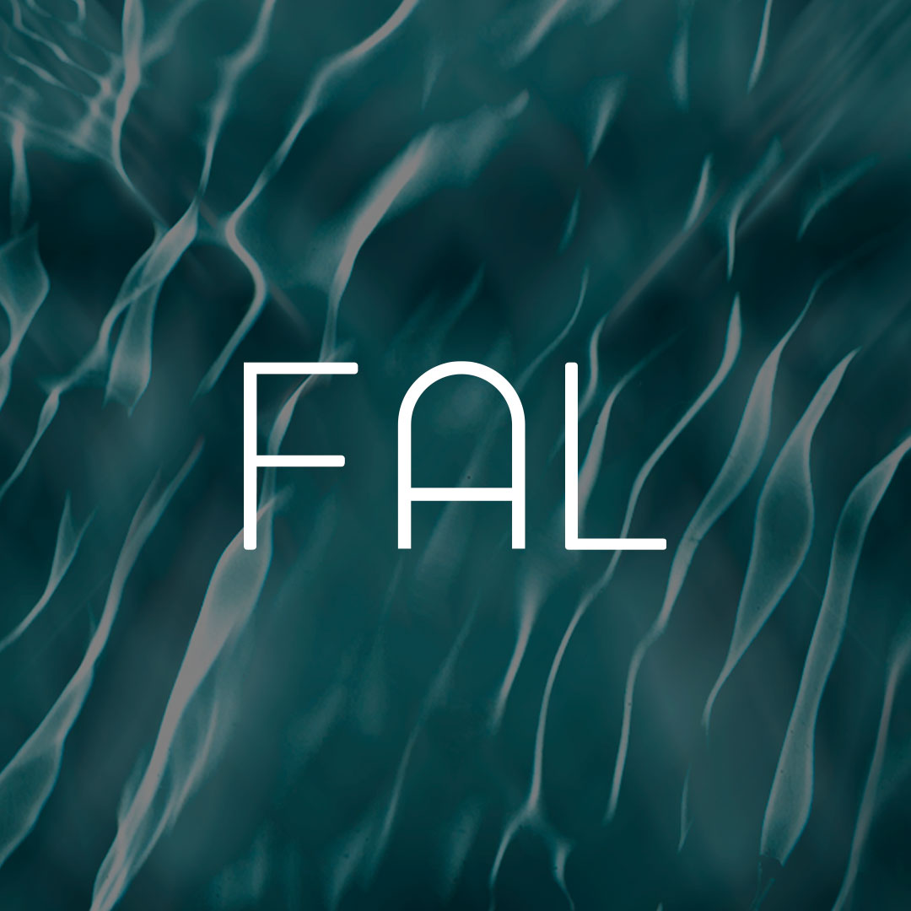
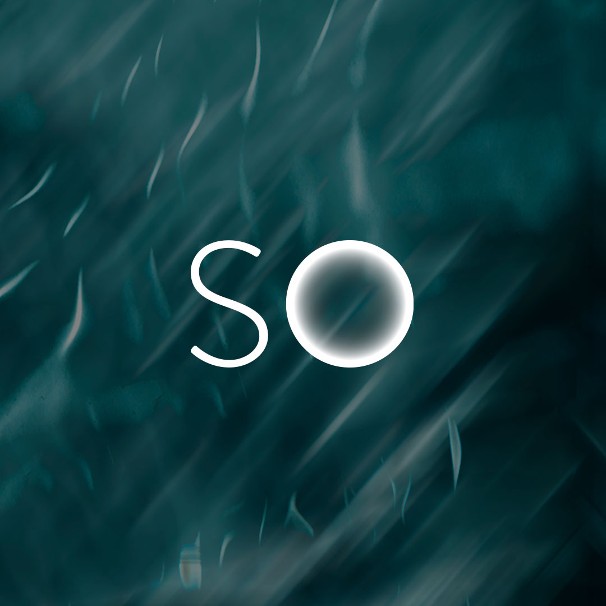
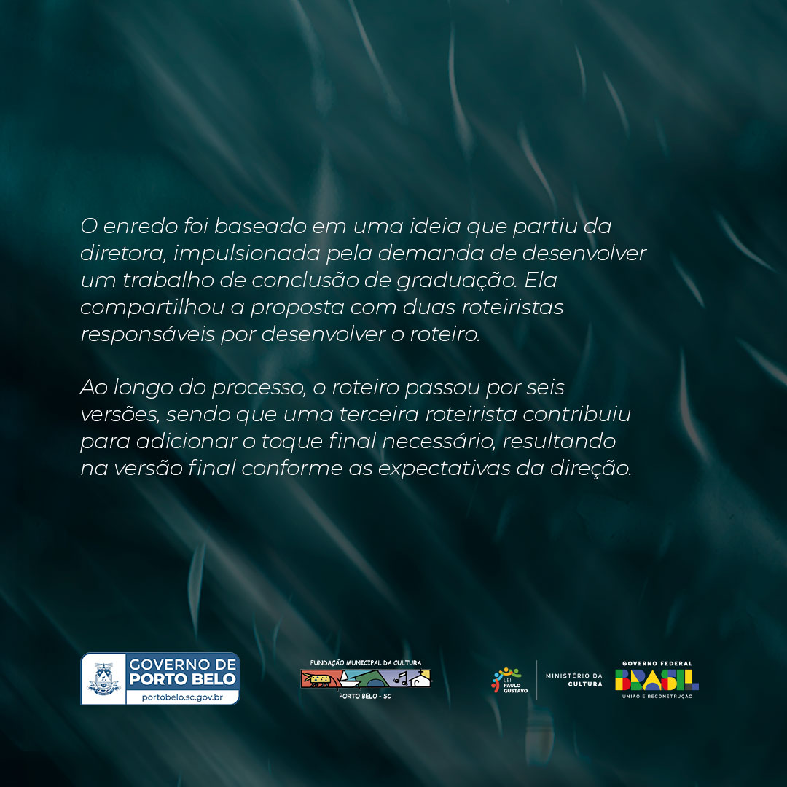

01
Direção de marca
Definimos linguagem, ritmo visual e coerência para que a marca seja percebida com mais verdade.
Sobre
Somos uma agência que trabalha marketing e direção visual com mais silêncio, intenção e precisão. Acreditamos que marcas fortes não dependem de excesso, mas de identidade, memória e consistência.
Nosso trabalho busca unir estratégia e sensibilidade para construir presença real, reconhecível e duradoura.
Serviços
Publicidade
A publicidade da Fukui Film parte de uma ideia simples: marcas não precisam disputar atenção o tempo inteiro, precisam construir percepção com consistência.
Criamos campanhas, filmes e peças visuais que conectam estética, posicionamento e performance, sem perder identidade no processo.
Conceito, direção criativa e narrativa visual para lançamentos e posicionamento.
Produções que unem imagem, ritmo e sensibilidade comercial.
Peças adaptadas para digital, social e presença contínua de marca.
Projetos

Moda, vínculo e presença visual construída com silêncio.
Um projeto de luz, pele e memória para posicionamento de marca.
Campanha editorial que transformou pausa em presença comercial.
Direção delicada para uma marca guiada por gesto e detalhe.
Uma presença mais leve, construída com luz e respiro visual.
Campanha para marcas que precisam de repetição com sofisticação.
Profundidade estética e silêncio como estratégia de percepção.
Uma direção mais noturna e íntima para presença digital.
Marca reduzida ao essencial, com imagem direta e segura.
Projeto fluido, contemplativo e construído para durar.
Presença construída com matéria, textura e calma visual.
Campanha para expansão com linguagem mais limpa e precisa.
Em foco
Entre os trabalhos que ajudaram a ampliar o alcance da Fukui Film, Cadafalso ocupa um lugar especial. O filme chegou à Amazon Prime carregando uma atmosfera densa, escolhas visuais marcadas e um tipo de tensão que pede precisão em cada quadro. Mais do que registrar cenas, o processo exigiu encontrar uma linguagem capaz de sustentar o peso da narrativa sem perder sensibilidade no detalhe.
Em Cadafalso, a Fukui Film reafirma um tipo de trabalho que vai além da execução. Existe curadoria de imagem, entendimento de narrativa e compromisso com a permanência visual da obra. O resultado é um filme que permanece na memória e revela, na prática, como a empresa conduz projetos que pedem densidade, acabamento e visão autoral.

Contraste suave, respiro visual e direção pensada para sustentar delicadeza com tensão.

No dicionário a palavra indica "uma estrutura provisória de madeira sobre a qual os condenados à morte eram executados." No curta, a artista representa a estrutura como um artefato simbólico que sustenta a protagonista.

O curta-metragem Cadafalso foi selecionado para a Mostra Catarinense do 28º Florianópolis Audiovisual Mercosul (FAM) 2024. O filme, que conta com o apoio da Lei Paulo Gustavo, foi exibido pela primeira vez no festival, realizado entre os dias 5 e 11 de setembro de 2024.

Com 15 minutos de duração, o filme aborda temas como a superação e traumas, inspirando-se em vivências pessoais de Yohana e na história de outras mulheres.

O close trabalha repetição e acabamento para transformar um detalhe em elemento narrativo.
Projetos de marketing, publicidade e filmagem para marcas que precisam de presença mais forte e mais coerente.
Se a sua marca precisa de campanha, direção visual, conteúdo recorrente ou um novo ponto de partida, a conversa pode começar por aqui.
fukuifilm@gmail.comAtendimento para projetos fechados, campanhas sazonais e acompanhamento mensal.
Solicitar orçamento
Se você clicar em sim, vamos abrir o WhatsApp da empresa com uma mensagem pronta para começar a conversa.